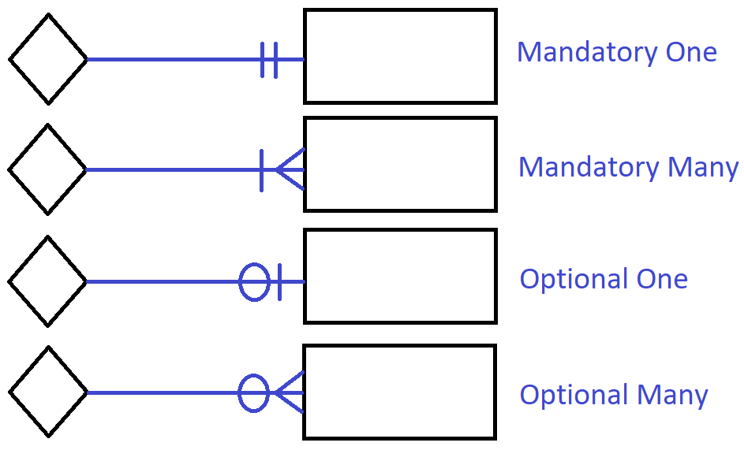

| Characteristic | Explanation |
|---|---|
| Declarative | A business rule is a statement of policy, not how policy is enforced or conducted; the rule does not describe a process or implementation, but rather describes what a process validates. |
| Precise | With the related organization, the rule must have only one interpretation among all interested people, and its meaning must be clear. |
| Atomic | A business rule marks one statement, not several; no part of the rule can stand on its own as a rule (that is, the rule is indivisible, yet sufficient). |
| Consistent | A business rule must be internally consistent (that is, not contain conflicting statements) and must be consistent with (and not contradict) other rules. |
| Expressible | A business rule must be able to be stated in natural language, but it will be stated in a structured natural language so that there is no misinterpretation. |
| Distinct | Business rules are not redundant, but a business rule may refer to other rules (especially to definitions). |
| Business-oriented | A business rule is stated in terms businesspeople can understand, and because it is a statement of business policy, only businesspeople can modify or invalidate a rule; thus, a business rule is owned by the business. |